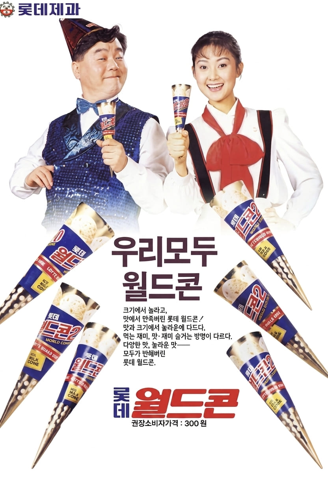

심형래,채시라
크기에 놀라고, 맛에서 만족해버린
롯데 월드콘 ! 우리 모두 월드콘

크기에 놀라고, 맛에서 만족해버린
롯데 월드콘 ! 우리 모두 월드콘

심형래는 1980년대를 대표하는 코미디언이자 배우로, 특유의 익살스러운 캐릭터와 친근한 이미지로 큰 인기를 얻었다. 채시라는 1984년 광고 모델로 데뷔한 이후 청순한 외모와 세련된 분위기로 사랑받으며 하이틴 스타로 성장했다. 두 사람은 당시 대중에게 높은 인지도를 가진 인기 연예인으로, 다양한 광고와 방송 활동을 통해 폭넓은 사랑을 받았다.
월드콘은 롯데제과가 출시한 대형 콘 아이스크림으로, 풍부한 양과 달콤한 맛을 앞세워 소비자들의 큰 관심을 받았다. 기존 아이스크림보다 크고 만족감 있는 제품이라는 점을 강조하며 1980년대 후반 대표 아이스크림 브랜드로 자리 잡았다.
광고는 "크기에 놀라고, 맛에서 만족해버린"이라는 문구를 통해 월드콘의 크기와 풍부한 맛을 강조했다. 코믹하고 친근한 이미지의 심형래와 청순한 매력의 채시라가 함께 출연해 다양한 연령층의 관심을 끌었으며, 제품의 대중적인 이미지를 형성하는 데 큰 역할을 했다.
1980년대는 텔레비전 광고가 소비자들에게 가장 큰 영향력을 발휘하던 시기였다. 기업들은 인기 코미디언, 배우, 가수 등을 광고 모델로 적극 기용하여 제품의 인지도를 높였으며, 스타의 이미지가 곧 브랜드의 이미지로 연결되는 경우가 많았다. 월드콘 광고 역시 당시 유명 연예인인 심형래와 채시라를 통해 소비자들에게 친숙하게 다가갔다.